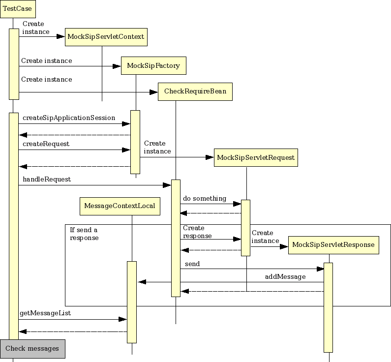

The Open Source SLEE and SIP Server
sf-api
単体テスト
pom.xml
pom.xmlに以下のdependencyを追加します。
<dependency>
<groupId>com.oki.sip</groupId>
<artifactId>sf-mock</artifactId>
<version>2.0-SNAPSHOT</version>
<scope>test</scope>
<optional>false</optional>
</dependency>
この設定により、SIP単体テストに必要な環境が構築されます。
単体テストの作成
単純なBeanのテストは、以下のように実行可能です。（TestNGを使用しています。）
public class CheckRequireBeanTest extends TestBase {
MockSipFactory factory;
CheckRequireBean targetBean;
@BeforeMethod
public void setup() {
super.setup();
targetBean = new CheckRequireBean();
}
@AfterMethod
public void teardown() {
super.teardown();
}
@Test
public void testHandleRequest1() throws Exception {
SipServletRequest req = createRequest("INVITE", "sip:from@oki.com",
"sip:to@oki.com");
// リクエストにRequireが設定されていない場合
targetBean.handleRequest(req);
// 応答が生成されて、送信されていればMessageContextLocalに追加される
List<SipServletMessage> messageList = MessageContextLocal.getList();
Assert.assertEquals(messageList.size(), 0);
}
}
CheckRequireBeanはRequireヘッダを確認し、サポートしていない拡張が含まれていた場合には 420応答を返します。
このテストでは、Requireヘッダを含まないリクエストの場合には、このBean自体が応答を返さないことを 確認しています。
リクエストの生成等を実装している基底クラスは以下のようになります。
public class TestBase {
MockSipFactory factory;
public void setup() {
MockSipServletContext context = new MockSipServletContext("check");
factory = new MockSipFactory(context);
}
public void teardown() {
MessageContextLocal.clear();
}
public SipServletRequest createRequest(String method, String from, String to)
throws ServletParseException {
SipApplicationSession appSession = factory.createApplicationSession();
SipServletRequest req = factory.createRequest(appSession, method, from,
to);
return req;
}
public SipServletResponse getSipServletResponse() {
List<SipServletMessage> list = MessageContextLocal.getList();
SipServletResponse res = (SipServletResponse) list.get(0);
return res;
}
}
単体テストでは、この他Servletを登録してSIPシーケンスを実施するための機能等もありますが、それについては 別途ドキュメントを参照してください。
単純なBeanの単体テストでは、大まかなシーケンスは以下のようになります。
- MockSipServletContextの作成
- MockSipFactoryの作成
- SipServletRequestの作成
- 通常のSIP Servlet APIと同様の方法でSipServletRequestを作成することができます
- テスト対象のBeanに対して作成したSipServletRequestを渡す
- Bean内で送られた（SipServletMessage.send()）メッセージはMessageContextLocalに保存される
- MessageContextLocal.getList()を呼び出して、SipServletMessageのチェック等を行う
このように各Beanの単体テストを実施し、処理が正しいことを確認します。
アプリケーションをデプロイして、正常にREGISTERによるロケーション登録およびINVITEのプロキシが 行われることを確認します。
次にアプリケーションを拡張して、Click To Call (3PCC)を行えるようにします。
© 2008 Red Hat Middleware, LLC. All rights reserved. Privacy Policy